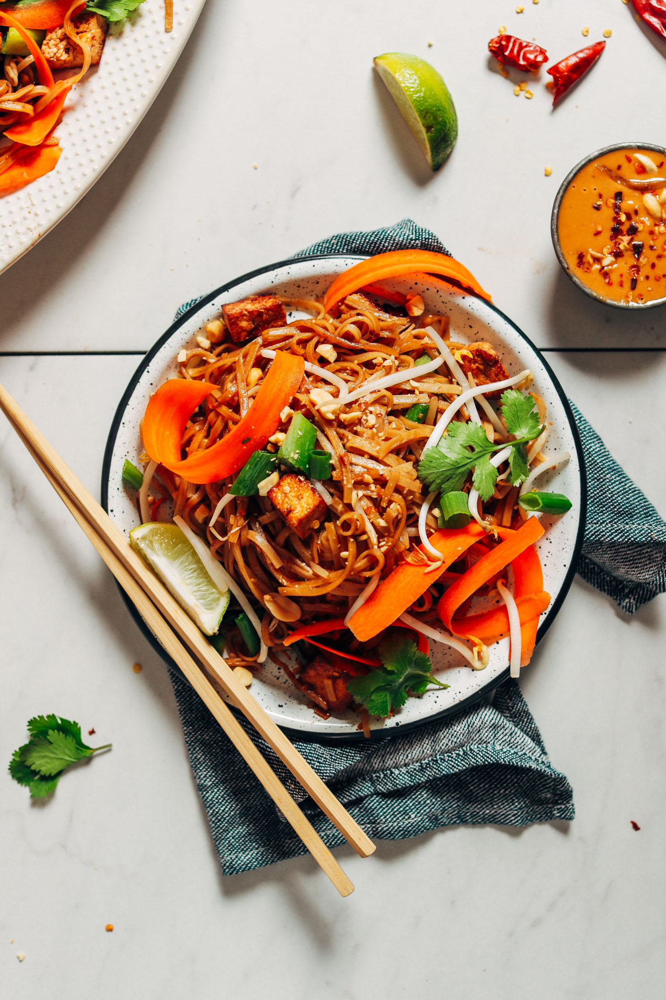

Veggie burrito bowl

Easy Tofu Pad Thai ready in just 30 minutes with simple ingredients. A hearty, versatile, plant-based dish with tons of texture and big flavor!
Ingredients
Sauce
- 1 1/2 teaspoon tamarind paste
- 1/3 cup cocunut aminos
- 3 1/2 tablespoon chili garlic sauce
- 1 1/2 tablespoon lime juice
Stir Fry
- 1 tablespoon sesame oil
- 1 cup cubed extra firm tofu
- 2 thai red chilies, chopped
- 2 garlic cloves, minced
- 1 tablespoon coconut aminos
- 1 cup beansprouts, chopped
- 1/3 cup chopped roasted peanuts
Noodles
Steps
- To a small saucepan, add tamarind, coconut aminos, coconut sugar, chili garlic sauce, lime juice, and vegetarian fish sauce (optional) and heat over medium heat until just simmering. Cook for 30 seconds, stirring occasionally, then turn off heat. Set aside.
- Ensure all stir fry ingredients are prepped, including cubed (briefly pressed) tofu, chopped green onions, minced garlic, bean sprouts, and chopped peanuts. If serving with peanut sauce (optional), prepare at this time.
- Add Pad Thai noodles to a large bowl and cover with just boiling water. Stir and cover and cook according to package instructions (usually about 5-6 minutes or until al dente).
- Drain noodles and toss with a little sesame oil to prevent sticking. Set aside.
- Heat a large-rimmed skillet over medium heat. Once hot, add oil and tofu and sauté for about 4 minutes, turning occasionally so it browns on all sides. Add red pepper flakes or Thai chilies, garlic, and coconut aminos (be careful, as the coconut aminos can splatter). Toss gently to combine until garlic is just slightly browned.
- Add noodles, Pad Thai sauce, bean sprouts, green onions, and peanuts and cook over medium-high heat, tossing occasionally (tongs are most useful) for about 2-3 minutes or until the sauce has coated everything and the dish is hot.
- To serve, plate with additional garnishes such as lime wedges, bean sprouts, peanut sauce, shredded carrot, cilantro, and sriracha or chili garlic sauce (all optional).
Main page